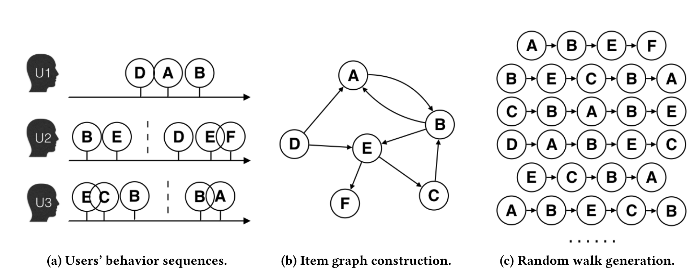
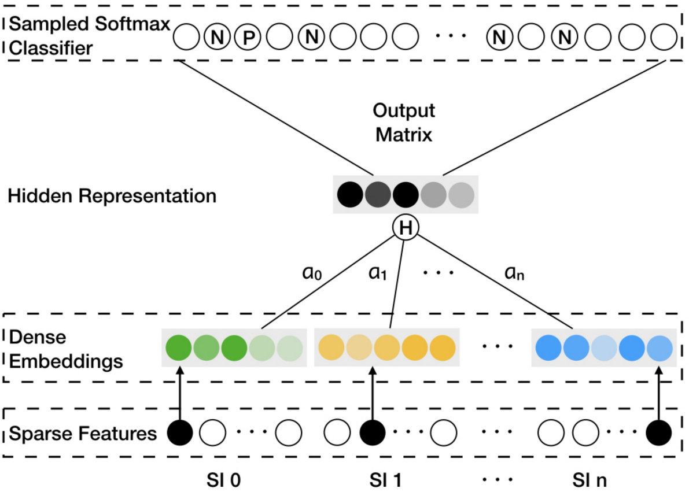

2.2.3. EGES：用属性信息增强序列¶
Item2Vec虽然验证了序列建模在推荐系统中的可行性，但其简单的设计也带来了明显的局限性。首先，将用户交互历史简单视为无序集合，忽略了时序信息可能丢失重要的用户行为模式。其次，对于新上架的物品由于缺乏用户交互历史，Item2Vec无法生成有意义的向量表示。
EGES（Enhanced Graph Embedding with Side Information） (Wang et al., 2018) 正是为了解决这些核心挑战而提出的。该方法通过两个关键创新来改进传统的序列建模：一是基于会话构建更精细的商品关系图来更好地反映用户行为模式，二是融合商品的辅助信息来解决冷启动问题。
2.2.3.1. 构建商品关系图¶
EGES的第一个创新是将物品序列的概念从简单的用户交互扩展为更精细的会话级序列。考虑到用户行为的复杂性和计算效率，研究者设置了一小时的时间窗口，只选择窗口内的用户行为构建商品关系图。
具体构建过程如图所示：当两个商品在同一会话（时间窗口内）的用户行为序列中连续出现时，在它们之间建立一条有向边，边的权重等于这种商品转移模式在所有用户行为历史中出现的频率。相比于传统方法将整个用户历史视为一个序列，这种基于会话的图构建方法能够更准确地捕捉用户在特定时间段内的连续兴趣转移模式。
{kind=link}

图2.2.2 商品图构建过程¶
在构建好的商品图上，EGES采用带权随机游走策略生成训练序列。从一个节点出发，转移概率由边权重决定：
其中\(M_{ij}\)表示节点\(v_i\)到节点\(v_j\)的边权重，\(N_+(v_i)\)表示节点\(v_i\)的邻居集合。通过这种随机游走过程，可以生成大量的商品序列用于后续的Embedding学习。
2.2.3.2. 融合辅助信息解决稀疏性问题¶
基于上述商品图和随机游走策略，我们可以采用类似Word2Vec的方法学习商品的向量表示。然而，这种纯粹基于行为序列的方法面临一个关键挑战：对于用户交互稀少的商品，由于缺乏足够的共现信息，很难学习到高质量的Embedding表示。
为了解决这种稀疏性问题，EGES方法的第二个创新是引入商品的辅助信息（如类别、品牌、价格区间等）来增强商品的向量表示。
GES的核心思想是将商品本身的Embedding与其各种属性的Embedding进行平均聚合：
其中\(W_v^s\)表示商品\(v\)的第\(s\)种属性的向量表示，\(W_v^0\)表示商品ID的向量表示。这种方法虽然有效缓解了稀疏性问题，但存在一个明显的局限：它假设所有类型的辅助信息对商品表示的贡献是相等的，这显然不符合实际情况。
EGES的核心创新在于认识到不同类型的辅助信息应该有不同的重要性。对于手机，品牌可能比价格更重要；对于日用品，价格可能比品牌更关键。
{kind=link}

图2.2.3 EGES模型架构¶
对于具有\(n\)种辅助信息的商品\(v\)，EGES为其维护\(n+1\)个向量表示：一个商品ID的向量表示，以及\(n\)个属性的向量表示。商品的最终向量表示通过加权聚合得到：
其中\(a_v^j\)是可学习的权重参数。这种设计的精妙之处在于，不同类型的辅助信息对不同商品的重要性是不同的——对于手机，品牌可能比价格更重要；对于日用品，价格可能比品牌更关键。
2.2.3.3. 代码实践¶
EGES的核心在于商品特定注意力层（ItemSpecificAttentionLayer），它为每个商品学习一组特征权重：
def call(self, inputs, item_indices):
"""
参数:
inputs: 特征嵌入 [batch_size, n+1, emb_dim]
item_indices: 商品索引 [batch_size]
"""
# 获取每个商品对应的权重参数 a_v^j
batch_attention_weights = tf.gather(self.attention_weights, item_indices)
# 计算 e^(a_v^j)
exp_attention = tf.exp(batch_attention_weights) # [batch_size, n+1]
# 归一化权重: e^(a_v^j) / sum(e^(a_v^j))
attention_sum = tf.reduce_sum(exp_attention, axis=1, keepdims=True)
normalized_attention = exp_attention / attention_sum
# 应用权重到特征嵌入
normalized_attention = tf.expand_dims(normalized_attention, axis=-1)
weighted_embedding = inputs * normalized_attention # [batch_size, n+1, emb_dim]
# 求和得到最终的商品表示 H_v
output = tf.reduce_sum(weighted_embedding, axis=1) # [batch_size, emb_dim]
return output, normalized_attention
这里的attention_weights是一个形状为\(|V| \times (n+1)\)的参数矩阵，其中\(|V|\)是商品总数，\(n+1\)是特征数量（商品ID
+
\(n\)种辅助信息）。对于每个商品，模型会学习到一组特定的权重，自动发现哪些特征对该商品更重要。这种商品特定的注意力机制是EGES相比简单平均聚合的关键优势。
冷启动商品的处理：对于新上架且没有任何用户交互历史的商品，EGES提供了有效的冷启动解决方案。由于这类商品缺乏行为数据，无法通过随机游走生成训练序列，因此既不存在基于ID的向量表示，也没有经过训练的注意力权重参数\(a_v^j\)。
在这种情况下，系统采用简单而有效的mean pooling策略：直接对该商品的所有辅助信息向量（类别、品牌、价格区间等）进行平均聚合来构建商品表示。虽然这种方法无法体现不同属性的差异化重要性，但能够有效利用商品的内容特征，从而支持基于向量相似度的商品召回（I2I召回）。
训练优化. EGES采用与Word2Vec类似的负采样策略，但损失函数经过了优化：
其中\(y\)是标签（1表示正样本，0表示负样本），\(H_v\)是商品\(v\)的向量表示，\(Z_u\)是上下文节点\(u\)的向量表示。
通过这种方式，即使是刚上架、没有任何用户交互的新商品，也能通过其属性信息获得有意义的向量表示，从而被纳入推荐候选集。
EGES在淘宝的实际部署效果显著：在包含十亿级训练样本的大规模数据集上，相比传统方法在推荐准确率上有了显著的提升，同时有效解决了新商品的冷启动问题。
下面训练EGES并评估召回效果。
from funrec import run_experiment
run_experiment('eges')
+---------------+--------------+-----------+----------+----------------+---------------+
| hit_rate@10 | hit_rate@5 | ndcg@10 | ndcg@5 | precision@10 | precision@5 |
+===============+==============+===========+==========+================+===============+
| 0.0189 | 0.0129 | 0.0097 | 0.0078 | 0.0019 | 0.0026 |
+---------------+--------------+-----------+----------+----------------+---------------+